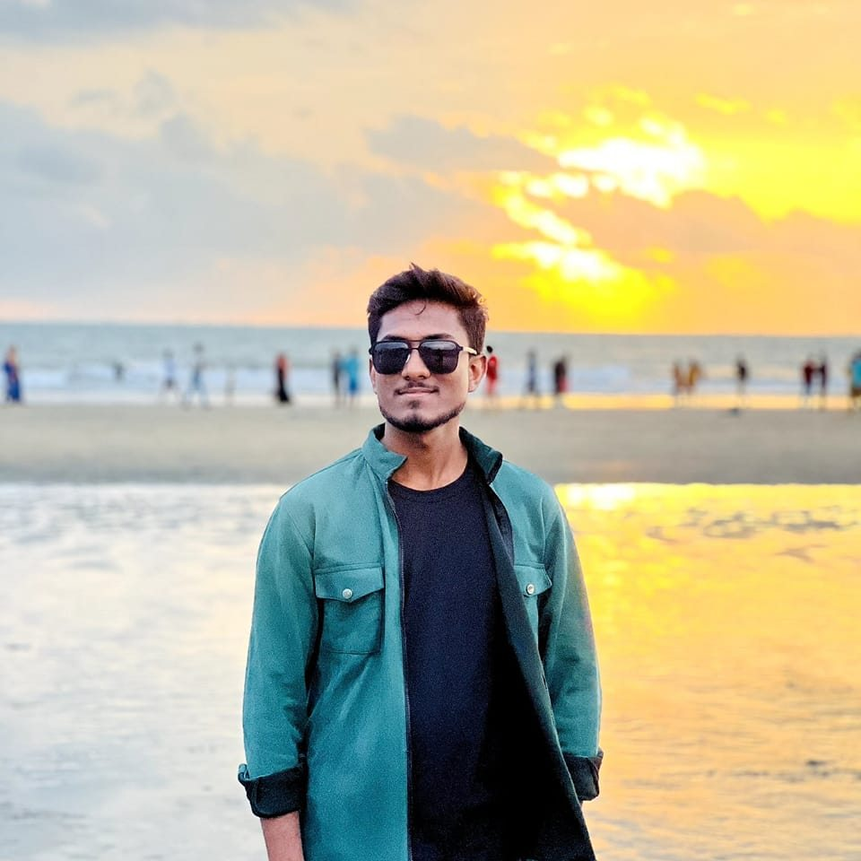

|  |
MD SAMI ALAM
MERN Stack Developer |
|
|
|
CONTACTsamialam5671@gmail.com+8801648925559 Dhaka, Bangladesh GitHub Portfolio EDUCATIONBachelor of ScienceComputer Science and Engineering 2020 - 2024 CGPA: 3.75 SKILLS
|
SUMMARYI am a MERN stack developer eager to contribute to dynamic teams, leveraging modern technologies for creating user-friendly web applications. My expertise includes both frontend and backend technologies, and I create dynamic web applications with proper user requirements. In the future, I plan to work on web automation with integrated generative AI.WORK EXPERIENCEJunior Software EngineerABC Software Ltd., Dhaka, Bangladesh 2024 - Present
PROJECT HIGHLIGHTSTask Management System
|